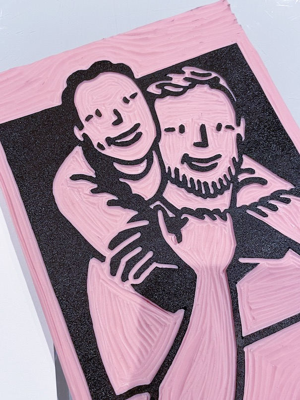

Printmaking
Printmaking
I need a low-stakes design for my first project - something that was just for me without any pressure of selling it! I drew a portrait of Shep & myself on my iPad, traced over the screen onto a piece of paper, and did the "graphite scribble" method to transfer the drawing onto my Speedball rubber linoleum block... and it turned out alright!
Lessons learned: I need a better way to transfer drawings onto the carving block. Also, this is a lot of fun.

Up next: making something that people might actually PURCHASE?!?! I've made countless physical art pieces but actually never sold anything before. I wasn't technically selling this -- I mailed a free print to anyone who donated $20+ to the East Coast Greenway Alliance (the organization who made my bike trip possible!) -- but it was actually a rather scary experience making stuff for others and feeling stressed about getting everything perfect. I did try a new transfer method - I printed my design with a laser printer (thank you SF public library for free printing!), then used nail polish remover to transfer the ink onto the rubber block. Worked perfectly! See image below for the transfer results. I also realized that the water-based Speedball ink had a tendency to rub off on my fingers / on other items, so I used a Krylon matte spray finisher to hopefully keep the ink from running.
Lessons learned: USPS can ship a print in a flat mailer envelope for about $1.50! Also, consider archival ink or eventually oil-based ink for a nicer finish. Also, don't use plain old cardstock, probably want a printmaking-specific paper. Also probably should get one of those Pfeil tools for more precise detailed cuts. Also, this really is insanely fun.

I'm endlessly inspired by athletes who push the envelope, approach their sport uniquely, or are just so frekaing stoked about what they do. These athletes also happen to be women, and oftentimes women of color which is such a nice bonus when it comes to an often male-dominated sports world. This is a work-in-progress, but so far I've got these lovely, strong ladies:
Lael Wilcox | Ultra-endurance road racer who inspires women (and men!) to ride
Michelle Kwan | The figure skating GOAT who is the reason I skate
Ashima Shiraishi | A dancer on the wall who broke records as a kid and continues to amaze with her grace on the rock